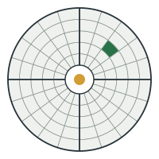
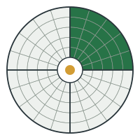

Celda
Una posición para un disco.
Referencia rápida

Una posición para un disco.

Agrupa sectores y su soporte.

Atraviesa las capas de la esfera.

Anillo de celdas del mismo tipo.

Capa de base de la esfera.
Capa de captación de luz.
Capa de transmisión.
Capa de refrigeración.
Capa de microondas.

Soporte: un disco por cuadrante.

Soporte: un disco por cuadrante.
Soporte: dos discos por cuadrante.
Estrella central de la esfera.

Carta que construyes por etapas.

Guarda la carta para puntuarla.
Recupera la carta para reconstruirla.
Vuelve a la etapa indicada.

Sigue el destino de la carta.
Resuelve al puntuar la partida.
Miden tu puntuación.

Actualiza ahora tu puntuación.
Representa tu construcción.
Se coloca en un área de soporte.

No da PV por colocación.

Celda vacía de la esfera.
Retira el disco; aplica sus reglas.
Cantidad por cada elemento indicado.

Paga costos y recibe ingresos.

Compra y vende al precio vigente.

En Mantenimiento, revela uno por jugador y resuelve las cartas.

La energía sobrante se descarta al final de la ronda.

Energía producida en Mantenimiento.
Recurso para construir en la esfera.

Tipo de proyecto productivo.

Actívala para extraer recursos.

Indica recursos, vetas y licencias.

Asigna las necesarias para extraer.

Se consumen al extraer tierras raras.

Nd, Gd, Er o Ce.

Tipo de proyecto económico.

Ingeniero para proyectos.

Ingeniero para proyectos.

Ingeniero para proyectos.

Ingeniero para proyectos.

Permanece junto a un disco.

Permanece con un disco.

Permanece con un disco.
Permanece con un disco.
Permanece con un disco.

Tipo de proyecto de personal.
Ficha que entregas al contratar.

Asigna ingenieros para obtener ingresos.
Modifica el beneficio del soporte externo.

El efecto alcanza a todos.